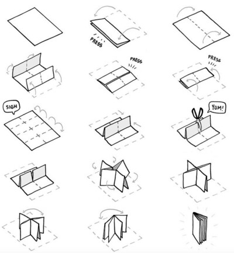

zines collection
- zines by moi:
- hey you, let's jam!
- zines by friends and other cool folk:
- put a silly hat on everything.
- make yourself a web site with your hands.
how to fold an eight-pager
you can start with any size paper, as long you can fold it nicely into eight. write on both sides of a page to get a reversible zine!
illustration by Rek Bell from XXIIV — zines.